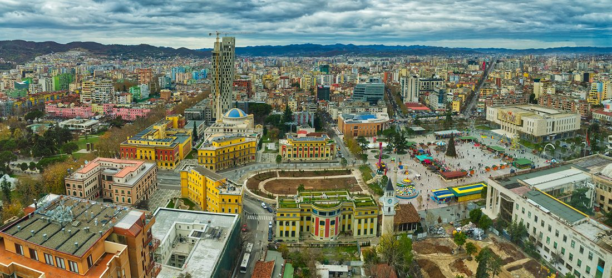
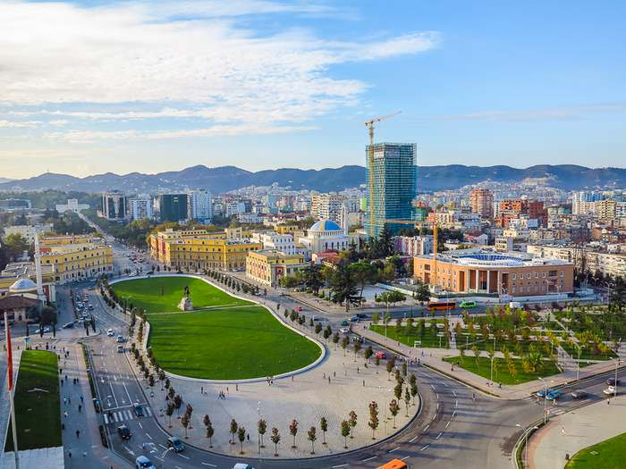

Despre Tirana
Tirana este capitala și orașul cel mai populat din Albania. Orașul este, de asemenea, capitala județului din jurul Tiranei, unul dintre cele 12 județe constituente ale țării. Tirana a fost înființată ca oraș în 1614, dar regiunea care corespunde astăzi teritoriului orașului a fost locuită continuu încă din epoca bronzului.
Capitala Albaniei era obisnuia sa apara frecvent in topul listelor pentru cel mai rău oraș din Europa. Deceniile de guvernare stalinistă au lăsat Tirana gri și sumbra, lipsita atât de infrastructură, cât și de servicii.
Prăbușirea comunismului în 1992 doar a agravat situația, deoarece haosul a înghițit orașul, iar criminalitatea a început să crească.
Toate acestea s-au schimbat acum. Astăzi, Tirana este, deși adesea haotică, un mic oraș foarte plăcut și centrul cultural, de divertisment și politic al Albaniei. Casă pentru o populație într-o rapida creștere de aproape un milion (populația totală a Albaniei se ridică la doar trei milioane), Tirana are un vibe pe care nu il veți găsi altundeva în această națiune înșelătoare.